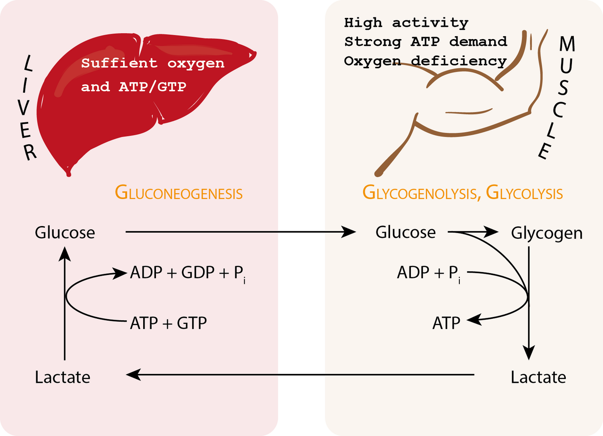

Ngộ Nhận Về Ngày Nghỉ "Nằm Bất Động Trên Sofa"
Khi bạn thức dậy vào buổi sáng sau một ngày tập chân nặng, chạy dài hoặc thi đấu căng thẳng với đôi chân nặng trĩu và Điểm Phục Hồi Màu Vàng hoặc Đỏ trên WHOOP, Oura Ring, hay Garmin, phản xạ tự nhiên của nhiều người là dành cả ngày nằm bất động trên ghế sofa.
Tuy nhiên, các nghiên cứu sinh lý học thể thao chỉ ra rằng—trừ khi bạn đang bị sốt, nhiễm siêu vi toàn thân hoặc chấn thương xương khớp cấp tính—sự bất động hoàn toàn thực chất lại làm chậm quá trình sửa chữa mô và kéo dài cơn Đau mỏi cơ khởi phát muộn (DOMS).
Tại sao lại như vậy? Bởi vì hệ thống bạch huyết và mạng lưới tĩnh mạch của bạn phụ thuộc rất lớn vào sự co bóp nhịp nhàng, nhẹ nhàng của cơ bắp để lưu thông dịch thể, dọn dẹp các sản phẩm phụ chuyển hóa và vận chuyển dưỡng chất tái tạo đến các sợi cơ bị vi tổn thương.

3 Cơ Chế Sinh Học: Tại Sao Phục Hồi Chủ Động Vượt Trội Hơn Ngồi Yên?
Khi bạn thực hiện 20 đến 35 phút vận động nhẹ ở Vùng nhịp tim Zone 1 (50%–60% Nhịp tim tối đa), 3 chuỗi phản ứng sinh lý sẽ đồng loạt kích hoạt để rút ngắn thời gian phục hồi:
1. Cơ Chế "Bơm Cơ Xương" (Skeletal Muscle Pump) & Dẫn Lưu Bạch Huyết
Trong khi trái tim bơm máu động mạch giàu oxy đi xuống cơ bắp dưới áp suất cao, hệ thống tĩnh mạch và mạch bạch huyết không có một "trái tim thứ hai" nào ở dưới chân để đẩy máu nghèo oxy và dịch viêm ngược chiều trọng lực trở về tim. Thay vào đó, cơ bắp chân và cơ đùi bao quanh các tĩnh mạch sâu có van một chiều. Mỗi nhịp bước đi hoặc đạp xe nhẹ nhàng sẽ ép vào thành tĩnh mạch (Bơm cơ xương), đẩy lượng dịch ứ đọng ở khoảng kẽ (phù nề vi mô) và các cytokine gây viêm ra khỏi vùng sợi cơ đang tổn thương.
2. Tăng Tốc Con Thoi Lactate & Chu Trình Cori Tại Gan
Trong một nghiên cứu kinh điển đăng trên Journal of Sports Sciences (Menzies et al., 2010), các nhà khoa học đã so sánh phương pháp phục hồi chủ động (vận động nhẹ dưới ngưỡng lactate) với việc nghỉ ngơi thụ động hoàn toàn sau bài tập cường độ cao. Kết quả chứng minh phục hồi chủ động giúp thanh thải lactate trong máu nhanh hơn vượt trội so với nằm nghỉ thụ động. Khi duy trì lưu lượng máu hiếu khí nhẹ nhàng mà không vượt ngưỡng kỵ khí, các sợi cơ co rút chậm (Type I) và gan (thông qua Chu trình Cori) sẽ nhanh chóng oxy hóa lượng lactate tồn đọng và trung hòa độ axit (ion H⁺).
3. Giải Phóng Nitric Oxide Nội Mạc & Phục Hồi Phó Giao Cảm
Dòng máu lưu thông nhịp nhàng tạo ra lực ma sát nhẹ lên lớp lót bên trong thành mao mạch (lớp nội mạc - endothelium), kích thích giải phóng Nitric Oxide (NO). Nitric Oxide làm giãn nở mạng lưới vi mao mạch, tưới đẫm các sợi cơ đang cần sửa chữa bằng axit amin mới, oxy và glucose mà không hề làm hao hụt kho dự trữ glycogen. Trong phân tích tổng hợp từ 99 nghiên cứu đăng trên Sports Medicine (Dupuy et al., 2018), phục hồi chủ động kết hợp giãn cơ giúp giảm rõ rệt cảm giác đau mỏi cơ và các chỉ dấu sinh học gây viêm (creatine kinase và interleukin-6).
Ma Trận Quyết Định: Khi Nào Nên Phục Hồi Chủ Động Và Khi Nào Phải Nghỉ Tuyệt Đối?
Hãy dựa vào các chỉ số sinh trắc học buổi sáng trên thiết bị đeo để chọn đúng chế độ phục hồi cho ngày hôm nay:
| Tín Hiệu Sinh Trắc Học Trên Đồng Hồ | Chế Độ Khuyến Nghị | Giao Thức Tối Ưu Trong Ngày |
|---|---|---|
Đau mỏi cơ sau buổi tập nặng; RHR bình thường hoặc +1–3 bpm; Nhiệt độ da ổn định |
🟢 Phục Hồi Chủ Động (Zone 1) | 25–35 phút đi bộ đường bằng ngoài trời, đạp xe không kháng lực, bơi thả lỏng hoặc tập linh hoạt khớp ở 50%–60% HR Max. |
Căng thẳng trí óc cao; Ngủ hơi thiếu (6.5 giờ); HRV giảm nhẹ 10%–15% |
🟢 Xả Stress Phó Giao Cảm | 20 phút đi bộ đón nắng sớm + 15 phút Yoga giãn cơ nhẹ + 10 phút thở cộng hưởng nhịp 5.5 giây. |
HRV sập sâu >25%; RHR tăng vọt +6 đến +10 bpm; Nhiệt độ da tăng +0.5°C+ (Sốt/Nhiễm siêu vi) |
🛑 Nghỉ Thụ Động Hoàn Toàn | Ngưng mọi bài tập thể chất. Hệ miễn dịch cần 100% năng lượng chuyển hóa để diệt vi-rút. Tập trung bù nước, điện giải và ngủ. |
| Đau nhói khu trú tại khớp, gân hoặc dây chằng (ví dụ: lật cổ chân, rách cơ cấp tính) | 🛑 Nghỉ Ngơi Chấn Thương / Vật Lý Trị Liệu | Tránh đặt tải trọng lên khớp đang tổn thương; tham khảo bác sĩ y học thể thao trước khi vận động trở lại. |
3 Quy Tắc Vàng Của Một Buổi Tập Phục Hồi Chủ Động Đúng Nghĩa
Sai lầm lớn nhất mà người tập thể thao thường mắc phải vào "Ngày Phục Hồi Chủ Động" là để cái tôi biến buổi tập thả lỏng thành một buổi tập trung bình (rơi vào "Vùng xám Zone 3"). Hãy tuân thủ 3 quy tắc vàng dưới đây để đồng hồ ghi nhận sự phục hồi thực sự thay vì cộng thêm tải căng thẳng:
- Giữ Trần Nhịp Tim Nghiêm Ngặt (
< 60%–65% Nhịp Tim Tối Đa): Đối với đa số người trưởng thành, nhịp tim trong buổi phục hồi chủ động chỉ nên nằm trong khoảng 95 đến 120 bpm. Bạn phải có khả năng hít thở 100% bằng mũi và trò chuyện trọn câu thoải mái mà không hề thấy nóng rát cơ bắp. - Chọn Chuyển Động Đồng Tâm, Không Va Đập (Zero-Impact): Các pha co cơ lệch tâm (như chạy xuống dốc, nhảy plyometrics hoặc hạ tạ nặng) gây ra vi rách sợi cơ. Vào ngày phục hồi, hãy ưu tiên các chuyển động đồng tâm mượt mà:
- Đạp xe tại chỗ hoặc đường bằng với kháng lực cực nhẹ (guồng chân
75–85 vòng/phútnhẹ nhàng) - Đi bộ đường bằng ngoài trời dưới ánh nắng tự nhiên buổi sáng - Bơi thả lỏng hoặc đi bộ dưới nước (áp suất thủy tĩnh của nước tự nhiên ép nhẹ lên đôi chân, hỗ trợ đẩy máu tĩnh mạch về tim cực kỳ hiệu quả!) - 15–20 phút tập linh hoạt khớp (Mobility) & lăn ống bọt (Foam Rolling) tập trung vào cột sống ngực, khớp hông, cơ đùi sau và bắp chân - Giới Hạn Thời Lượng Từ 20 Đến 40 Phút: Một buổi phục hồi chủ động chuẩn khoa học phải giúp bạn cảm thấy tràn đầy năng lượng hơn sau khi kết thúc so với lúc mới bắt đầu. Dừng lại ở mốc 30–35 phút giúp kích hoạt tuần hoàn máu tối đa mà không làm cạn kiệt kho dự trữ glycogen tại gan và cơ.
Tài Liệu Tham Khảo & Nguồn Y Khoa
- Menzies, P., Menzies, C., McIntyre, L., Paterson, P., Wilson, J., & Kemi, O. J. (2010). Blood lactate clearance during active recovery after an intense running bout depends on the intensity of the active recovery. Journal of Sports Sciences, 28(9), 975–982. https://pubmed.ncbi.nlm.nih.gov/20544484/
- Dupuy, O., Douzi, W., Theurot, D., Bosquet, L., & Dugué, B. (2018). An Evidence-Based Approach for Choosing Post-exercise Recovery Techniques to Reduce Markers of Muscle Damage, Soreness, Fatigue, and Inflammation: A Systematic Review With Meta-Analysis. Frontiers in Physiology, 9, 403. https://pubmed.ncbi.nlm.nih.gov/29755363/
- WHOOP The Locker. Active Recovery Workouts: What They Are & Why They Work Better Than Total Rest. https://www.whoop.com/us/en/thelocker/active-recovery-workouts/
- Oura Ring Pulse Blog. Active Recovery vs. Rest Days: How to Listen to Your Readiness Score. https://ouraring.com/blog/active-recovery/